1) Declarar un array llamado comidas e iniciarlo con los siguientes elementos: lentejas, garbanzos, arroz, pasta, guiso y carne. A continuación, mostrar los elementos de dicho array sin usar bucle, de modo que aparezca el siguiente resultado:
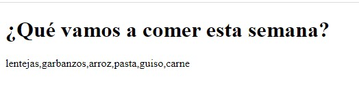
2) Modificar el ejercicio anterior, creando además un nuevo array con los días de la semana. Ahora la información que se muestra será la siguiente:
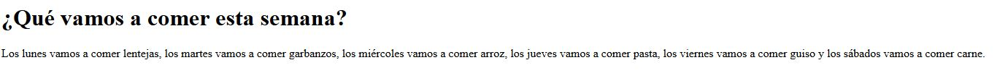
3) Modificar el ejercicio anterior para que ahora se declare e inicialice el array desde el constructor , lo que conocemos como array denso y muestre la misma información pero ahora recorriendo el array con un bucle. La salida debe ser (debe aparecer con el punto final):
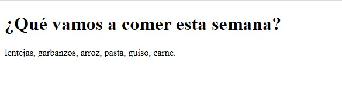
4) Crear un array mixto llamado comidasPorDia de modo que cada índice sea un día de la semana y cada valor la comida que se va a comer ese día. Al usuario le aparecerá un mensaje para que introduzca el día de la semana que desea saber la comida que hay disponible y a continuación se mostrará dicha comida.
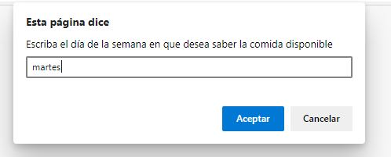
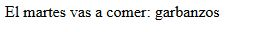
5) Cree un script que tome una serie de palabras ingresadas por el usuario y almacene esas palabras en un array. Posteriormente, manipule ese array para mostrar los siguientes datos:
a) La primera palabra ingresada por el usuario.
b) La última palabra ingresada por el usuario.
c) El número de palabras presentes en el array.
d) Todas las palabras ordenadas alfabéticamente.
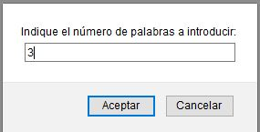
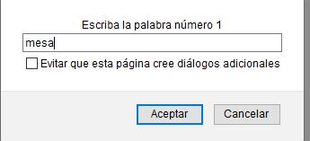
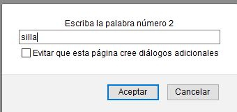
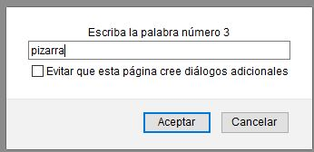
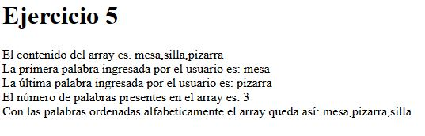
6) Cree un array e inicialícelo con seis ciudades de España. A continuación crear un menú que permita al usuario las siguientes opciones sobre el array:
a) Añadir una nueva ciudad al array, insertándola por el final. El usuario tendrá que escribir la ciudad.
b) Añadir una nueva ciudad al array, insertándola por el principio. El usuario tendrá que escribir la ciudad.
c) Eliminar la última ciudad del array.
d) Eliminar la primera ciudad del array
e) Eliminar una ciudad del array indicando su posición
f) Eliminar una ciudad del array indicando su nombre
Notas:
- El menú debe seguir apareciendo hasta que el usuario quiera.
- El array actual debe mostrarse cada vez que se haga una operación.
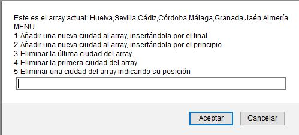
7) Pedir al usuario que ingrese unas palabras o números separadas por comas. Dicha cadena se debe convertir en un array. Por ejemplo, si escribo la cadena:"1,2,3,4,5" el array equivalente será [1,2,3,4,5].
8) Realizar un ejercicio del mismo estilo del 6 , sobre un array de números, pero con las siguientes opciones: devolver el mayor número del array, el menor número del array, la media, la suma, los elementos repetidos y los no repetidos.
9) Se desea gestionar información sobre las provincias de Huelva, Sevilla, Córdoba y Cádiz mediante arrays. En concreto se desea almacenar su nombre, población y extensión en km2. Realizar un primer script en el cual organizar dicha información mediante arrays paralelos de modo que se impriman todos los datos (los datos correspondientes a las poblaciones y extensiones hay que buscarlos en internet).
10) Repetir el ejercicio anterior pero usando ahora arrays multidimensionales.
11) Crear una matriz de 4×4 de números enteros que inicialmente esta vacía, nos piden hacer un menú con estas opciones:
- Rellenar TODA la matriz de números, debes pedírselo al usuario.
- Suma de una fila que se pedirá al usuario (controlar que elija una correcta)
- Suma de una columna que se pedirá al usuario (controlar que elija una correcta)
- Sumar la diagonal principal (ver ejemplo)
- Sumar la diagonal inversa (ver ejemplo)
- La media de todos los valores de la matriz
IMPORTANTE: hasta que no se haga la primera opción, el resto de opciones no se deberán de ejecutar, simplemente mostrar un mensaje donde diga que debes rellenar la matriz.